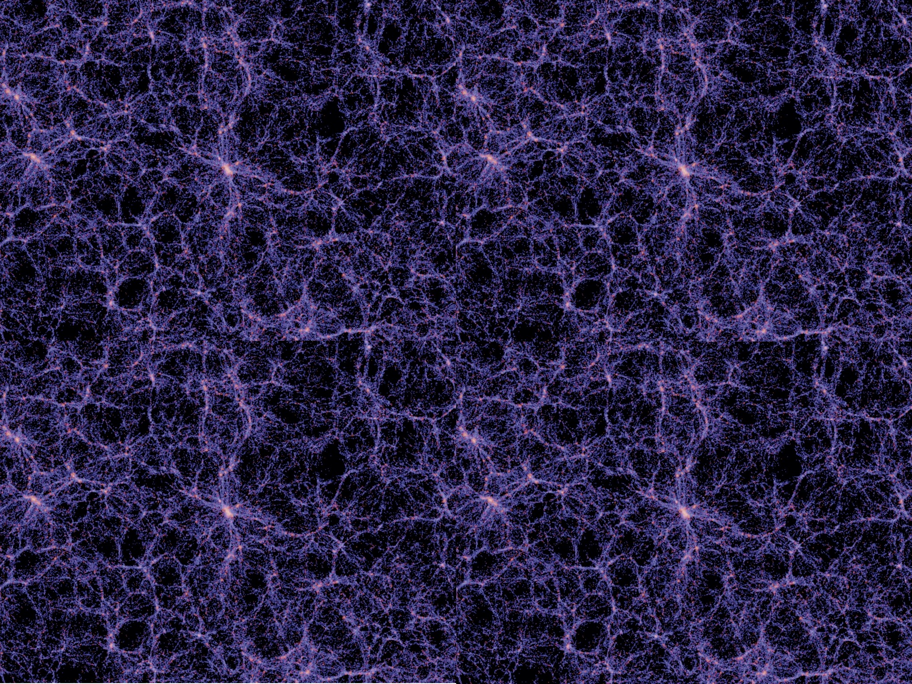

Cosmological simulations #1: why and what?
2/Nov 2011
This is the first of a series of posts dedicated to cosmological simulations!
I do this because, as stressed by my PhD advisor,
I need to practice in explaining in a clear way specialized knowledge and in
linking it with its background and motivations. Also I would like to keep track
of my progress and of what I’m learning!
So, let’s start with “Why we need cosmological simulations? What are they?”!
Let’s have a look at the night sky: if we are so lucky to be in a dark site like
the mountains or a desert, we can see the stars, and our Galaxy, The Milky Way.
With a little telescope we can also see other galaxies, like Andromeda. We can
find them in group of galaxies or clusters of galaxies. On bigger scales these
form sheets and filaments as you can see in the figure (taken from the Millenium
simulation).

Theoretical models, widely accepted, say that these structures formed from initial small density fluctuations in the matter, grew under their self gravity, lead by a special type of matter that can interact only through gravity, called “dark matter”.
A homogeneous and isotropic universe is described by the Friedmann equations in general relativity. Until the density fluctuations are small we can treat them as perturbations in a Friedmann universe. If the matter under consideration is non-relativistic (and it is!) and on scales smaller than those of the observable universe we can study the evolution of these perturbations in the Newtonian limit. We also consider gravity as the only interaction to be taken into account for now. On large scales (more than some kiloparsecs) this is not a bad approximation as gravity is the only interaction working efficiently in driving the evolution of the fluctuations on that scales.
We have good analytic models for the evolution of these perturbation until the density contrast (we call density contrast the quantity
$\delta(\vec x,t)=(\rho(\vec x, t)-\rho_{bg}(\vec x, t))/\rho_{bg}(\vec x, t)$
where $\rho_{bg}(\vec x, t)$ is the background density at given position and time)
is smaller than the unity.
This is the “linear regime”.
We call it “linear” because we can describe the system using first order
perturbations and the solutions we find are in good agreement with the exact solutions.
When the density contrast reaches and exceeds the unity, perturbations become
“non-linear” and the analytic models break.Cosmological N-body simulations are then the only way we have to study perturbations in the non-linear regime. Note that when the fluctuations collapse forming what we call a “halo”, the density contrast is of the order of 100. Cosmological simulations are called “N-body” because they involve the calculation of the (gravitational) force among all the bodies (particles) of the simulation.
With cosmological simulations we can also play with the initial conditions of our model of the universe, change its contents, … and see what will happen. It’s the closest thing to a laboratory that we have.
Using different techniques is also possible to include non-gravitational effects in the simulations, such as gas hydrodynamics, star formation, and so on.
Reference: J. S. Bagla, Cosmological N-body simulation: Techniques, scope and status